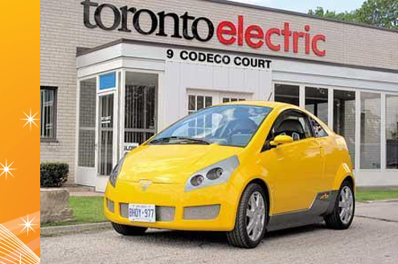
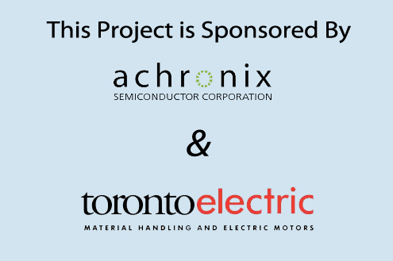
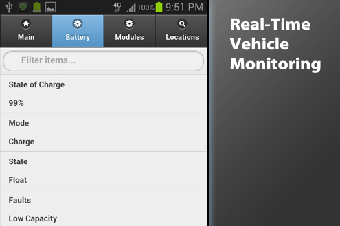
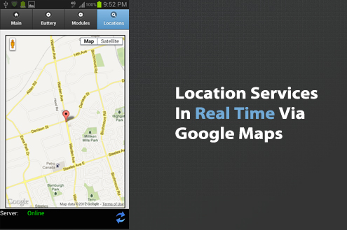
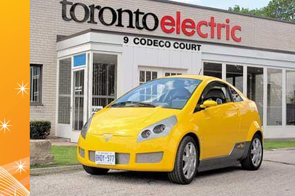
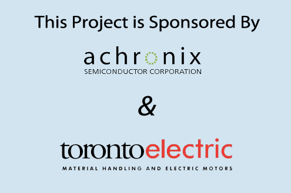
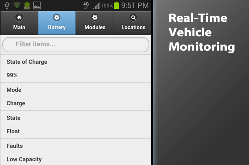
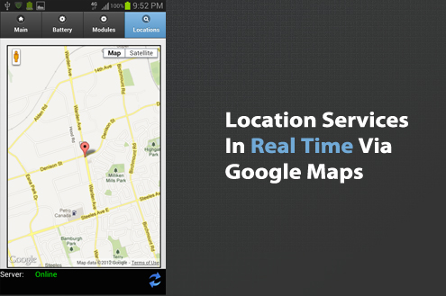

Electric Vehicle
Battery Monitor
Electric vehicle production is a growing industry and relatively new to the automotive market. This project will create a software monitoring system for an electric car provided by Toronto Electric. The car has an integrated battery monitoring system (BMS) which consists of an array of microcontrollers monitoring 24 four-cell modules. The BMS is able to transmit its information to a processor board designed by Archronix Inc. The processor board has the ability to transmit the battery information to a local web page and to a GSM modem. The battery is the most expensive product within the electric vehicle. With a monitoring system that keeps track of history and instances of results, much information can be graphed versus specific daily conditions to further improve the batteries.
Design Report